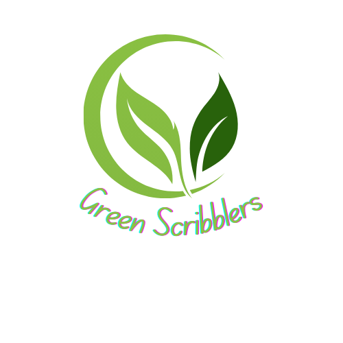

Green Scribblers is a company that amis to make a better place. through eco-conscious creativity. That’s why we've developed a line of recycled stationery—crafted with care, designed with purpose, and made entirely from sustainable materials. Whether you're jotting down notes, sketching ideas, or organizing your day, our products help you stay inspired while reducing your environmental footprint.
